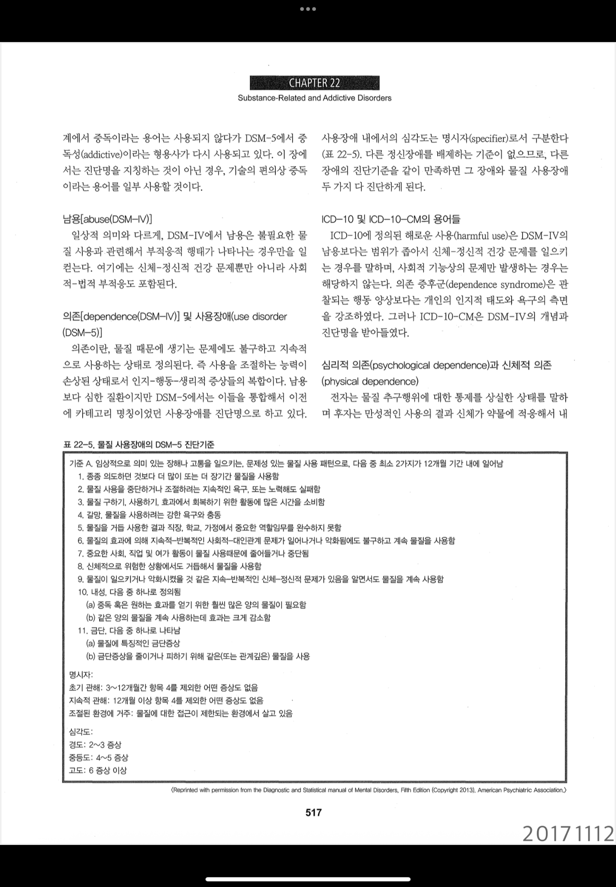

17. 물질오남용
물질오남용은 개인건강에 심각한 피해를 줄 수 있기 때문에 의사는 오남용 가능 물질을 주의하여 처방해야 하고, 사용자 교육을 시행해야 하며, 물질의 오남용 판단과 의존성을 평가하여 환자를 찾아내고 그 문제를 해결하는 것이 사회 건강증진 차원에서 중요하다.
원인 | ||
물질 오용 | 정해진 용법 외 사용: 처방된 용량보다 많이 복용하거나 더 자주 복용하는 행위. 목적 외 사용: 질병 치료가 아닌 쾌락, 각성, 체중 감량 등을 위해 복용. 타인의 약물 복용: 본인에게 처방되지 않은 약물을 빌려서 복용. 위험한 혼합: 약물을 술이나 다른 약물과 임의로 섞어 복용하여 부작용 위험을 높이는 경우. | |
물질사용장애 | 통제 상실: 끊으려 노력해도 조절이 안 되며, 사용에 과도한 시간을 할애함. 사회적 손상: 직장, 학교, 가정의 역할을 수행하지 못하고 대인관계 갈등이 발생함에도 지속함. 위험한 사용: 신체적·정신적 문제가 악화됨을 인지하면서도 계속 사용함 내성: 같은 효과를 얻기 위해 점점 더 많은 양이 필요함. 금단: 사용 중단 시 신체적 고통이나 정서적 불안이 나타남. | |
평가목표 1) 물질을 오남용하는 환자에게 병력청취와 신체진찰로 의존상태와 생활과 건강에 미치는 긍정적, 부정적 영향을 설명2) 사용원칙을 교육 | ||
구체적인 성과 | ||
병력 청취
| 물질 사용 상황을 확인 | 종류: 술, 담배, 카페인, 수면제, 진통제, 다이어트 약, 마약류 등 정확한 물질명 용량, 빈도, 기간, 경로 |
| 물질에 의한 영향(의존, 합병증 등) 확인 | 내성: 동일한 효과를 위해 양이 점점 늘어났는지 여부 금단: 중단 시 손 떨림, 식은땀, 환각, 경련, 불안 증상 발생 여부 합병증: 기억력 저하, 소화기 이상, 황달, 손발 저림, 우울, 불안, 수면 장애 등 |
| 물질 사용 조절 능력 평가 | 중단 시도: 줄이거나 끊으려고 시도했다가 실패한 횟수 갈망: 물질을 사용하고 싶어 참기 힘든 강력한 충동 유무 시간 소모: 물질을 구하거나, 사용하거나, 효과에서 회복되는 데 쓰는 하루 시간 우선순위: 취미나 즐거운 활동을 물질 사용 때문에 포기했는지 여부 |
| 물질 사용과 관련된 다른 건강 위험 평가 | 사회적 기능: 무단결석/결근, 직무 수행 능력 저하, 가사 소홀 대인관계: 가족이나 주변 사람과의 잦은 다툼, 사회적 고립 위험 행동: 음주/약물 상태에서의 운전, 기계 조작, 범죄 연루 감염 위험: 주사기 공동 사용 여부 (HIV, B/C형 간염) 정신과적 공존 질환: 기저에 깔린 우울증, 조울증, 공황장애 유무 |
신체 진찰 | 물질 사용에 따른 신체 이상을 확인하는 신체진찰 | 활력징후 - 흥분제- 혈압 상승, 빈맥, 체온 상승 - 억제제(아편계, 수면제)- 혈압 저하, 서맥, 호흡수 저하 동공: - 축소- 아편계 중독의 전형적 징후 - 확대- 각성제, 환각제 중독 또는 아편계 금단 현상 피부 진찰: 주사 자국- 팔 안쪽, 발등 등 정맥 주사 흔적 및 농양 확인 만성 합병증: 황달(간 손상), 영양 불량 상태 신경학적 진찰: - 손떨림- 알코올이나 진정제 금단 증상 - 보행 실조- 알코올, 수면제 중독으로 인한 비틀거림 |
| 정신상태를 평가 | 의식 수준, 외모 및 행동, 정동 및 기분, 사고 과정 및 내용, 망상, 자살/타살 사고, 환각, 인지 기능, 병식 |
진단 및 치료 | 물질사용장애 정도를 평가하기 위한 진단계획 | 소변 약물 스크리닝: 가장 흔히 쓰이는 검사. 최근 사용한 약물 확인 혈중 약물/알코올 농도, 자가 보고식 설문지 |
| 물질 사용으로 인한 신체적 이상을 확인 | 전혈구검사, 간 기능 검사 (LFT), 전해질 검사 감염병 검사, 심전도 (ECG), 흉부 X-선 |
| 물질오남용의 치료계획 | 해독: 체내 약물을 안전하게 배출하고 금단 증상을 조절. 인지행동치료 (CBT): 약물 사용을 유발하는 상황과 생각을 파악하고 대처법 훈련. 사회적 지지 체계: AA(단주 모임), NA(단약 모임) 등 자가조직 연계. 재발 방지 약물 - 알코올: 날트렉손(갈망 감소), 아캄프로세이트. - 아편계: 메타돈, 부프레노르핀 (대체 요법). |
| 합병증 및 금단증상의 치료계획 | 아편계 해독제: 나록손(Naloxone) - 호흡 억제 시 즉시 투여. 벤조디아제핀 해독제: 플루마제닐(Flumazenil). 알코올/BZD 금단: 벤조디아제핀(Diazepam, Lorazepam) 투여 영양 보충: 알코올 환자에게 베르니케 뇌증 예방을 위한 티아민(비타민 B1) 투여. 정신과적 공존 질환 치료: 동반된 우울증, 불안 장애에 대한 약물 및 상담 병행. |
환자교육 | 응급조치에 대해 교육 | 의식 확인 및 기도 확보: 의식이 없을 때 혀가 기도를 막지 않도록 고개를 옆으로 돌려주고(회복 자세), 입안의 이물질을 제거함. 호흡 감시: 숨을 쉬지 않거나 입술이 파래지면(청색증) 즉시 119에 신고함. 해독제 소지 및 사용 |
| 물질오남용에 대한 폐해와 예방 및 치료원칙 | 1) 물질 오남용의 폐해 신체적 폐해: 간경화, 뇌 손상(기억력 저하), 심혈관 질환, 감염성 질환(HIV, 간염) 위험성 강조. 정신적 폐해: 우울증, 불안 장애, 망상 및 환각으로 인한 판단력 상실. 사회적 폐해: 직업 상실, 경제적 파탄, 가정 붕괴 및 범죄 연루 가능성. 2) 예방 원칙 고위험 상황 회피: 약물 사용 유혹이 있는 장소나 모임 피하기. 스트레스 관리: 약물 대신 운동, 취미 생활 등 건강한 스트레스 해소 창구 마련. 처방 준수: 처방받은 약은 반드시 용법과 용량을 지키고, 남은 약은 폐기. 3) 치료 원칙 질병 인식: 중독은 의지 부족이 아니라 치료가 필요한 뇌의 질환임을 인지시킴. 장기적 접근: 단기 해독보다 중요한 것은 재발 방지이며, 최소 6개월 이상의 장기 치료가 필요함. 다각적 치료: 약물 치료뿐만 아니라 상담(CBT), 가족 치료, 자가조직(AA, NA) 참여를 병행해야 함. 단단한 지지 체계: 가족과 주변인이 비난보다는 지지와 감시의 역할을 동시에 수행해야 함. |

억제제 및 마약류
종류 | 약물 | 중독증상 | 부작용 | 금단증상 | 치료 |
진정재(BZD) 1 | 로라제팜(아티반), | 졸음, 주의력 감퇴, 비현실감, 이인증, 호흡억제 | 호흡마비, 혼수, 의식저하, 저혈압, 안구진탕 | 불안, 경련, 섬망, 자율신경계 항진 | Flumazenil, 점진적 감량 |
수면제 1 | Z-drug (졸피뎀) | BZD와 유사 | 이상 수면, 순행성 기억상실 | 반동성 불면증, 불안, 초조, 손떨림 | Flumazenil, 수면 위생 교육 |
아편계 1 | 메페리딘(데메롤) 모르핀, 헤로인, 펜타닐, 코데인 | 고통 경감, 졸음, 정신 운동 지연, 핀포인트 동공, 호흡 저하, 서맥 | 부교감 항진: 동공 수축, 오심, 서맥, 호흡 억제, 진전, 경련, 섬망, 혼수, 변비 | 교감 저하: 통증, 오심, 구토, 동공산대, 발열, 눈물, 콧물, 설사, 닭살 | 중독 : Naloxone 금단 : methadone -> clonidine |
마취제 3 | 프로포폴, 케타민 | 진정, 황홀감, 도취감, 회복감 | 기억 상실, 무의식, 호흡 중지, 호흡 곤란, 심박수 저하, 저혈압 | 불안, 불면 | 약물 중단, 호흡 보조 |
흥분제 및 각성제
종류 | 약물 | 중독증상 | 부작용 | 금단증상 | 치료 |
각성제 4 | 메트암페타민(필로폰) 다이어트약(푸링), 엑스터시, 카페인? | 능률/성욕증가, 불안, 착란, 동공 산동, 고열, 환시 | 교감 항진 동공 산대, 심계 항진, 환시, 망상, 오심, 구토, 발한, 황달 | 우울, 피로, 불쾌, 불안, 과수면 | 경하면 – 대증요법 정신병적-haloperidol 우울 – SSRI |
코카인 | 코카인 | 능률/성욕증가, 불안, 착란 | 비중격 천공, 기관지/폐손상 | 우울, 불쾌, 불안, 과수면 | 암페타민, TCA, bromocriptine |
환각 및 기타 물질
종류 | 약물 | 중독증상 | 부작용 | 금단증상 | 치료 |
대마초 | 대마 (마리화나) | 이완, 지각 예민 | 결막충혈, 식욕증가, 무욕증후군 |
| BDZ, haloperidol |
환각제 | LSD, PCP | 지각 풍부, 현실감 상실 | 무욕증후군 |
| BDZ, haloperidol |
흡입제 | 본드, 가스, 니스 | 다행감, 붕 뜸, 공포, 환각 | 오심, 식욕 상실, 납중독, 안구진탕 |
| 흡입중단 |
약물 및 호르몬
종류 | 약물 | 중독증상 | 부작용 | 금단증상 | 치료 |
비마약성 진통제 | 진통소염제 (Aspirin, NSAIDs) | 자살시도로 내원하는 경우 많음 | 속쓰림, 위궤양, 신기능저하, 빈맥, 발열, 의식저하, 호흡곤란 |
| 약물중단, 위세척, 활성탄 |
스테로이드 | 아나볼릭 스테로이드 (헬스) | 남성호르몬 과다 증상 | 여드름, 여성형 유방, 발기부전, 탈모 | 우울, 나른 | 약물 중단 |
무엇을/왜/언제/어디서/얼마나 -> 내성/의존성/남용/시도/금단 -> A/E/외/과/약/사/가 -> PEx (생략 가능) -> 진단/검사-> 설득 -> 격려/조력 -> 전략/금단/대처 -> 위험성 -> 약속
시작 | 안녕하세요. 학생의사 OOO입니다. 환자분 성함과 등록번호 확인하겠습니다. 날씨도 쌀쌀한데 오시느라 고생하셨습니다. 지금부터 제가 몇 가지 여쭤보고 신체 진찰도 진행하려고 하는데 괜찮으신가요? 오늘은 어떤 일로 내원하셨나요? 오늘 말씀하시는 내용은 비밀 보장이 되고 진료 목적 외에 사용되지 않으니 안심하고 편하게 말씀해주세요. | ||
상황 | 어떤 약을 복용하시나요? 왜 복용하려고 하시나요? | ||
O | 언제부터 | ||
L | 어디서 처방 | ||
D | 얼마나 자주, 한번에 몇 개씩 | ||
Co | 예전보다 복용량이 느셨나요? (내성 확인) 같은 양을 써도 효과가 예전보다 떨어지나요? | ||
Ex | 이전에도 | ||
C | 의존 | 약을 복용했을 때 어떤 효과가 있나요?
- 진정제 : 졸림/주의력 감퇴/비현실감/이인증 - 마취제 : 진정/황홀감/도취감/회복감 - 각성제/코카인 : 능률/성욕 증가/착란/환시 - 아편계 : 통증 감소/정신운동지연/졸음/식욕저하 - 환각제 : 현실감 상실/환각 | |
| 남용 | [법적] 약 복용과 관련하여 법률적 문제가 생긴 적이 있나요? [의무] 약 복용으로 인해 결근/결석 하거나 중요한 할 일을 못하진 않았나요? (자녀 돌보기, 집안일 등) [관계] 약 복용 문제로 가족이나 주변 사람들에게 반복적으로 지적을 받거나 싸우나요? / 인간관계에 문제가 생긴 적 있나요? [여가] 약 복용으로 여가 활동 시간을 포기하게 되나요? [신체] 약 복용으로 인해 스스로에게 해를 입힌 적이 있는지? / 신체가 안 좋아져도 약을 복용하게 되나요? | |
| 시도 금단 | [시도] 약물을 끊어보려 한 적이 있나요?(자발/비자발) 몇번이나 있나요? 얼마나 오래 성공했나요? 실패한 이유는 뭔가요? [금단] 약을 복용하지 못했던 적이 있나요? 어떤 증상이 있었나요? 다시 복용하면 좋아졌나요?
금단증상 진정제 : 불안/경련/두근거림/초조/자율신경계 항진 각성제/코카인 : 우울/불쾌/불안/과수면/기억력, 집중력 저하/졸림/나른함 아편계 : 통증/오심/구토/발열/눈물/콧물/설사 | |
A | [순환/호흡] 호흡곤란, 두근거림 [소화] A/N/V/D/C [신경] 두통/어지럼/의식소실/경련/손떨림 [정신] 우울/불안/불면 | ||
외 | 수술/외상/입원 | ||
과 | HTN/DM/간/신장/정신과 | ||
약 | 복용중인 다른 약물 | ||
사 | 음주/흡연/커피/직업/스트레스/식습관/운동 | ||
가 | 약물 복용, 정신과 진료 | ||
여 | 임신가능성 | ||
PEx
| 동의 구하기, 손 씻기 v/s확인-눈-입-팔다리-흉부-복부-신경 | ||
| 기본 | V/S 확인 (혈압, 맥박, 호흡수, 체온) 1 G/A: 의식수준, 전반적인 위생 상태 2 눈: 동공산대/축소, 안구진탕, 빈혈, 충혈, 황달 3 입: 탈수, 분비물 4 팔다리: 자살시도 흔적, 하지 부종 5 흉부: 호흡음, 심음 6 복부: 시청타촉 + 간 7 신경: 감각, 운동, DTR | |
| 협조해주셔서 감사합니다. 불편한 건 없으셨나요? 손씻기 | ||
감별진단 /검사 | 지금까지 지금까지 문진과 신체 검진 소견을 종합해 보았을 때 현재 ~ 한 것으로 보아 ~ 약물에 중독 증상이 있으며, 의존성이 꽤 높은 것으로 판단됩니다. 이로 인해 뇌, 간 등 신체 기관에 손상이 생기지는 않았는지 추가 검사가 필요합니다. 정확한 진단을 위해 혈액검사를 통해 간기능, 신기능 검사, 소변검사가 필요할 것으로 보이는데 괜찮으신가요?
(자살 위험 있거나 금단 증상이 심한 경우 – 섬망, 경련) 저는 OOO님에게 입원하셔서 의료진의 도움을 받으며 치료하시는 것을 권해드립니다. 입원 치료하게 되면 불편하신 증상을 더 신속하게 해결할 수 있고, 약을 끊으실 수 있는 확률도 올라갑니다. (급성 중독 증상이 있을 경우) 지금 OOO님은 과량의 약물을 복용한 상태이기 때문에, 먹은 지 얼마 되지 않았다면 위세척이 필요할 수 있습니다. 이미 몸에 흡수된 뒤라면 수액을 드려 약의 농도를 희석시키고 약의 종류에 따라 알맞은 해독제가 있다면 해독제를 투여할 수도 있습니다. | ||
설득 | 말씀드린 대로, ~ 약물 때문에 ~한 증상이 있는 것으로 생각됩니다. OOO님께서는 약물을 중단할 의사가 있으신가요? 1 YES : 이번에 병원에 오시게 되어 다행입니다. 그동안 ~ 증상 때문에 많이 힘드셨을텐데, 제가 약물을 끊으실 수 있도록 최대한 도와드리겠습니다. 2 NO : 환자분께서 ~ 약물을 ~ 정도로 평소에 자주 드신다고 하셨습니다. 지금까지는 특별한 문제가 없었을지라도 이 약은 ~과 같은 심각한 부작용이 생길 수 있는 약입니다. 또한 점점 내성이 발생하고 약을 못 먹게 되었을 때의 금단 증상이 심해질 수 있습니다. 약물을 과복용하게 되었을 경우 숨이 안 쉬어 지거나 의식이 떨어지는 일 까지 발생할 수 있기 때문에 오늘 병원에 오셨을 때 약물을 서서히 중단하실 수 있도록 도와드리고 싶은 데 어떻게 생각하시나요? 3 계속 처방해 달라고 할 때: 네 저도 OOO님의 마음을 이해합니다. 그렇지만 OOO님께 궁극적으로 도움보다 해를 더 많이 끼칠 것을 알면서도 약을 드릴 수는 없습니다. 지금까지 약으로 얻어온 효과를 다른 방식으로 대체하고, 약을 끊는 과정에서 금단증상을 줄일 수 있도록 도와드릴 테니 이번 기회에 약을 끊어보시는게 어떨까요? | ||
격려 | 그동안 써오던 약을 끊는 것이 결코 쉽지 않은 일임을 잘 알고 있습니다. 약을 끊는 과정에서 예상치 못한 어려움을 만날 수 있지만, 낙담하거나 포기하지 마시길 바랍니다. 오늘 정말 큰 결심을 해주신만큼, 저희도 최선을 다해 OOO님께서 약 없이도 잘 지내실 수 있도록 도와드리겠습니다. | ||
전략/금단/대처 | 약물을 갑자기 끊으면 경련이나 의식저하/섬망 등 금단 증상이 생길 수 있으니, 길항제, 대체 약물 등으로 서서히 약물의 필요량을 줄이고 해독시키도록 하는 것이 좋을 것 같습니다. 많이 힘드시다면 금단증상을 줄여주는 약도 드릴 수 있으니, 어려움이 있다면 언제든지 말씀하시기 바랍니다. 효과가 없다면 약을 증량하는 것이 아니라 다른 약으로 교체하거나 다른 치료방법을 고려해보는 것이 좋습니다. + 약물 중독 환자분들의 재활 모임이나 가족 모임에 소개해드리고 함께 이겨나갈 수 있도록 도와드리겠습니다. | ||
위험성 | 약물을 과복용하면 숨이 잘 안 쉬어질 수 있고, 토하게 되면서 질식하실 수도 있어요. 또 약물로 인해 넘어지거나 판단을 제대로 못하게 될 경우 외상을 입을 수도 있습니다. 혹시라도 숨이 차거나 쓰러질 것 같이 힘드시다면 수액 치료가 필요할 수 있으니 병원에 방문해 주세요. | ||
약속 | 다음주에 다시 외래에 방문하셔서 그동안 어떤 것들이 힘들었는지 확인하고 그에 따라서 조절해보도록 하겠습니다. 그 전에라도 신체적, 정신적으로 많이 힘드실 때는 언제든지 찾아오셔도 좋습니다. 마지막으로 궁금한 점 있으세요? 없으시면 다음주에 뵙겠습니다. 오늘 고생 많으셨습니다. | ||